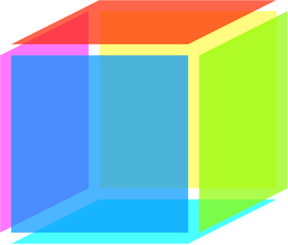
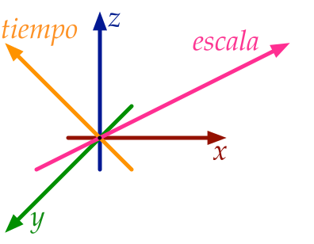
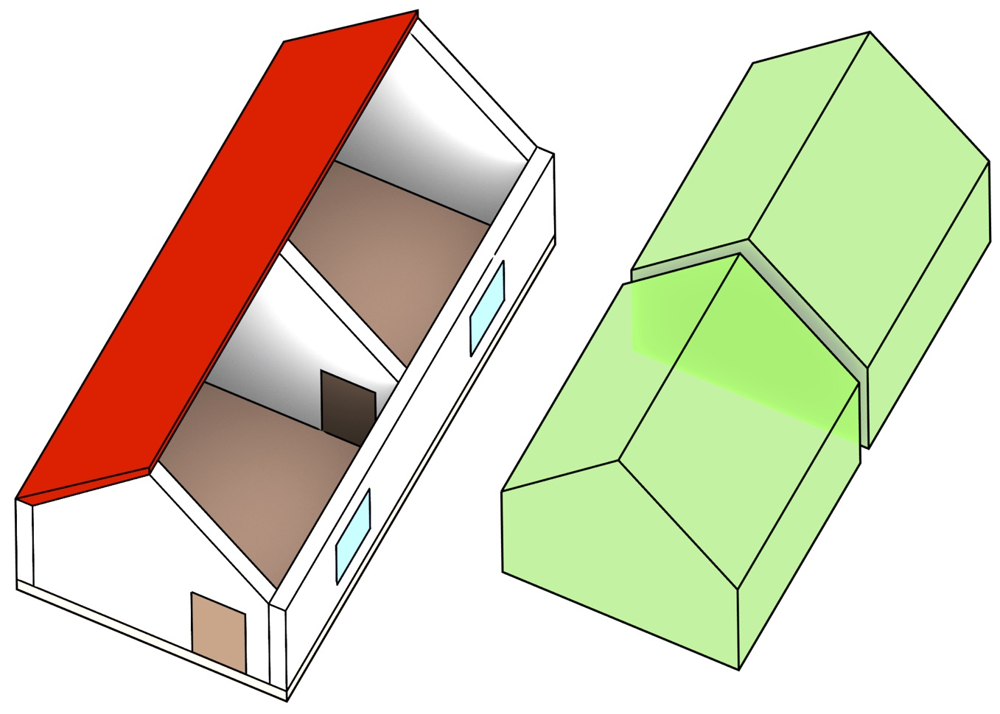
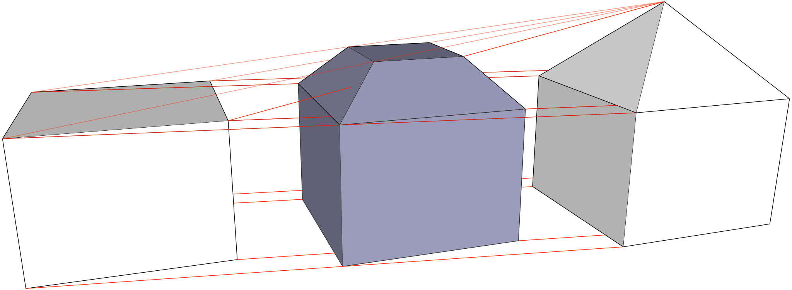

Nuestro mundo es tridimensional y complejo, cambiando continuamente a través del tiempo y mostrándose distinto a distintas escalas. Aún así, cuando lo modelamos usando sistemas de información geográfica (SIG), generalmente usamos representaciones 2D, las cuales esencialmente consisten en conjuntos de puntos, líneas y polígonos enlazados entre sí (Figura 1). Estas representaciones son relativamente fáciles de usar y eficientes, y una gran variedad de métodos se han construido usándolas. Sin embargo, las representaciones 2D son necesariamente restrictivas. Nos fuerzan a reducir los problemas a dos dimensiones, limitan el tipo de objetos que podemos representar y dificultan guardar las relaciones entre diferentes objetos—especialmente cuando éstas son a través del tiempo y diferentes escalas. A pesar de ello, la mayoría de la investigación en SIG se dedica a mejorar estas representaciones 2D, así como a desarrollar nuevos métodos que las usan para resolver problemas, sean éstos nuevos o antiguos.
Esta tesis explora un nuevo y fundamentalmente distinto paradigma de modelado—integrando características espaciales y espaciales como dimensiones en el sentido geométrico, específicamente apuntando hacia los casos del tiempo y la escala (Figura 2). A pesar de que este paradigma ha sido propuesto antes a un nivel conceptual, esta tesis tiene como objetivo llevarlo a cabo al implementar los aspectos fundamentales de un SIG de altas dimensiones, desarrollando representaciones para objetos en altas dimensiones (\(n\)D), así como nuevos métodos que operen en ellas para crear, manipular y visualizar información geográfica. Como esta tesis muestra, el paradigma de altas dimensiones tiene un alto consumo de memoria pero también es muy poderoso, proveyendo un método simple y consistente para guardar la geometría, los atributos y las relaciones topológicas entre objetos de cualquier dimensión. Este paradigma genérico puede ser fácilmente extendido a otras características no espaciales, haciendo posible un mejor manejo de datos con consistencia a través de las dimensiones y operaciones más poderosas, como verificar si dos objetos son adyacentes en algún momento.
Para poder modelar el espacio de altas dimensiones, es mejor considerar una partición espacial \(n\)D como una base (Figura 3), la que es conceptualizada como un complejo simplicial o celular. éste puede entonces ser implementado con una estructura de datos basada en símplices, un grafo de incidencia, como un conjunto de poliedros Nef, o—como en esta tesis—usando modelos topológicos ordenados, como la tupla de células (cell-tuple) o los mapas generalizados o combinatorios (generalised/combinatorial maps).
Crear representaciones de objetos en altas dimensiones puede ser complejo. Los métodos comunes usados en 2D y 3D, como la manipulación directa de elementos combinatorios primitivos, o el uso de operaciones de construcción que operan al nivel de los elementos primitivos (como las operaciones de Euler), se basan en nuestra intuición de la geometría 2D/3D, y por lo mismo no funcionan bien en altas dimensiones. Esto causa que sea demasiado fácil crear objetos inválidos, los cuales no pueden ser fácilmente interpretados o reparados—un problema que es extremadamente aparente incluso en tres dimensiones.
Esta tesis propone tres métodos novedosos para crear fácilmente representaciones de objetos en altas dimensiones, todos los cuales son intuitivos e intentar crear datos de salida válidos. La extrusión recibe un complejo celular \(n-1\) dimensional y un conjunto de intervalos por cada célula, proyectándolos de forma paralela a un nuevo eje para crear un complejo celular \(n\) dimensional (Figura 4). La construcción incremental describe un objeto \(n\) dimensional basado en su frontera \(n-1\) dimensional, desde la dimensión cero (puntos) y hacia arriba. Finalmente, es posible construir un modelo 4D enlazando una serie de modelos 3D a diferentes niveles de detalle (Figura 5).
Para poder visualizar modelos en altas dimensiones, así como poder procesarlos en el software existente, es importante tener métodos para extraer de éstos subconjuntos significativos 2D/3D. Estos métodos consistirían de dos pasos: (i) seleccionar un subconjunto de los objetos en el modelo y (ii) proyectar este subconjunto a una dimensión menor. Como un paso inicial hacia este tipo de métodos, esta tesis muestra como se pueden definir las proyecciones ortográficas y de perspectiva de \(n\) dimensiones a \(n-1\).
Finalmente, esta tesis tuvo un enfoque importante en validar los algoritmos con datos reales, lo cual sólo fue posible al desarrollar métodos para reparar datos inválidos, los cuales son comunes en la práctica. Esta tesis por lo tanto contiene métodos para crear polígonos y particiones planares válidas usando una triangulación restringida de los datos de entrada, así como un método para reparar poliedros y particiones 3D juntando objetos (snapping) de menores dimensiones y eliminando las partes que se solapan utilizando operaciones booleanas de conjuntos con poliedros Nef. Esto permitió pruebas hasta en seis dimensiones basados en datos reales—una buena base para un SIG de altas dimensiones.
En el futuro, el trabajo de esta tesis será extendido con operaciones de modificación en altas dimensiones, datos reales espaciales y temporales 4D, así como métodos de reparación de datos con garantías de calidad. Todas las implementaciones hechas para esta tesis están disponibles públicamente bajo licencias de código abierto.

Figura 1: En los SIG, un cubo no se representa como un sólido, sino como las 6 caras cuadradas en su superficie.↩

Figura 2: El espacio 3D, el tiempo y la escala modelados como un espacio 5D.↩

Figura 3: Una partición espacial 3D se compone de un conjunto de volúmenes que llenan el espacio sin huecos y sin solaparse entre ellos.↩
(a)
(b)
Figura 4: (a) Un conjunto de polígonos se convierte en (b) un conjunto de paralelepípedos al aplicar una extrusión 2D a 3D.↩

Figura 5: Dos niveles de detalle de una casa (izquierda y derecha) se enlazan en un modelo 4D.↩